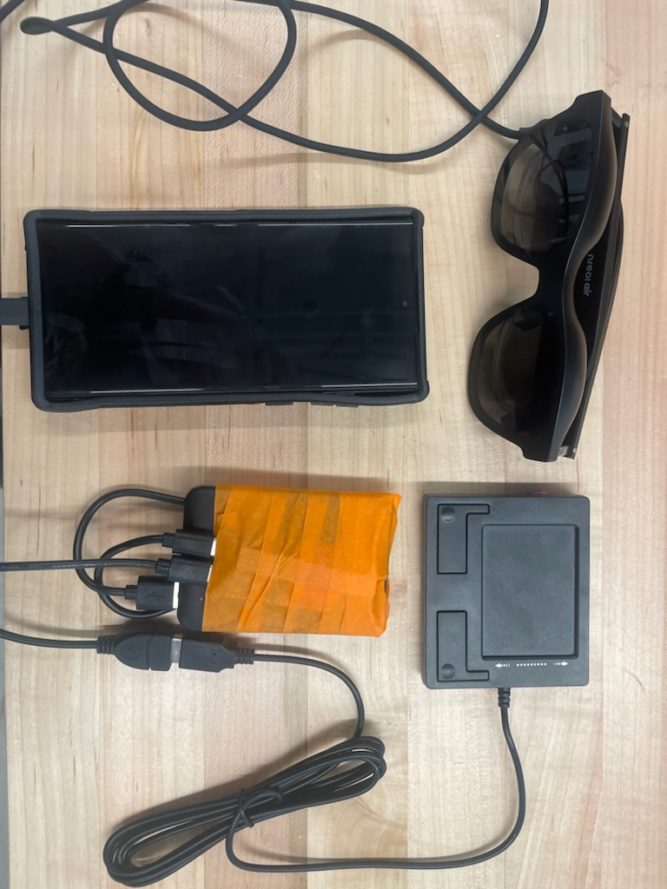
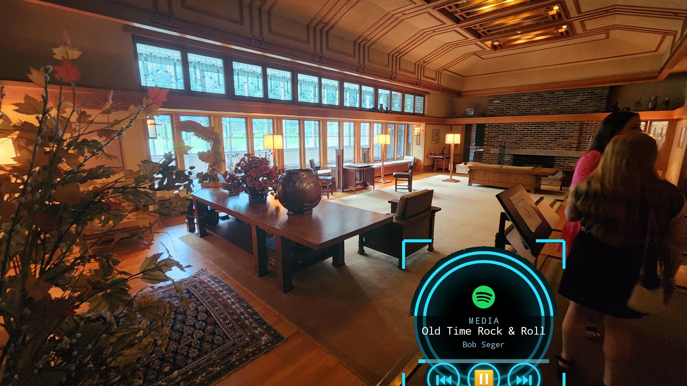
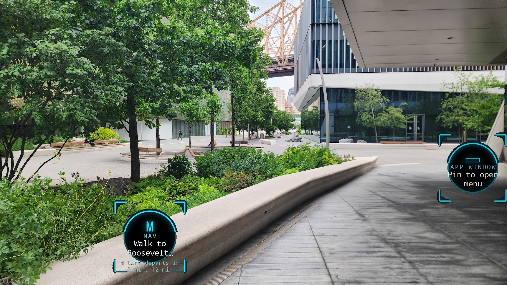

Gesture-Linked Ambient Navigation & Control Environment
A heads-up interaction system for XReal glasses, driven by a custom HID trackpad — glanceable panels revealed proportionally as you move.
Gesture-Linked Ambient Navigation & Control Environment
GLANCE is an ecosystem for expanding control of the digital world through human gestures. It's currently built around a pair of AR glasses running software that stays invisible until called up through a wearable trackpad — nothing on screen until you reach for it.
Today, GLANCE lets you control a set of predetermined widgets: maps, media playback, notifications, and app integrations like YouTube and Instagram. Move your thumb, the right panel appears; let go, it fades back to nothing.
The direction it's headed is bigger than any one widget: an ecosystem of software and hardware where a device stops being something you hold and starts being a physical extension of yourself.
move the trackpad, watch the HUD respond



every panel the trackpad can reveal on-glass
Your next calendar event and a live countdown, glanceable without unlocking your phone.
Incoming phone notifications surfaced directly in your field of view as they arrive.
Turn-by-turn directions relayed from Google Maps, always in view without looking down.
Playback controls and now-playing info for whatever's active on your phone.